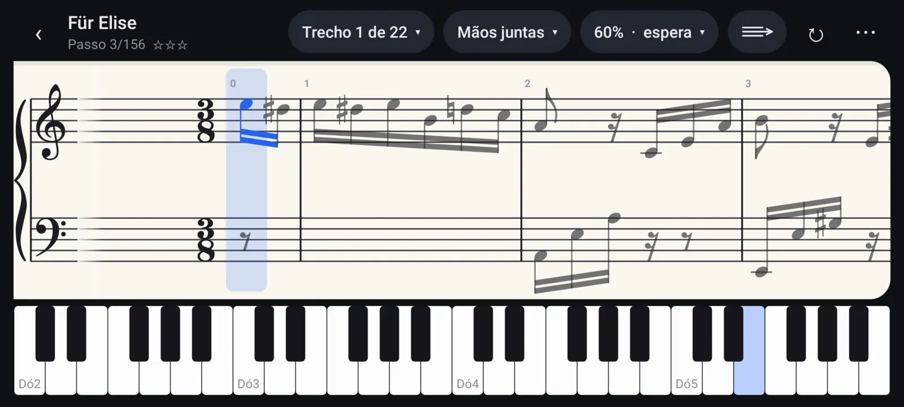
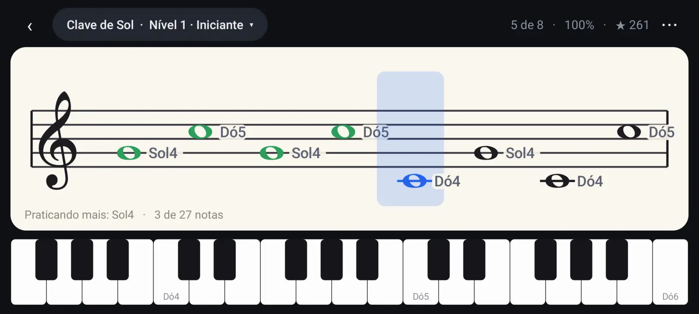
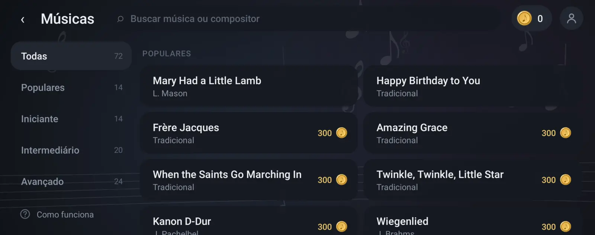
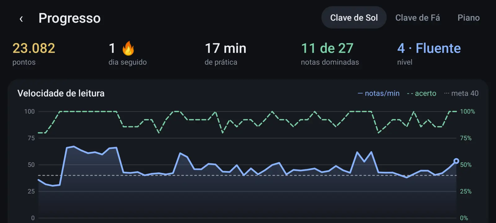

Escola em trilha
24 aulas em 8 unidades, uma depois da outra: o teclado e as mãos, leitura, ritmo, mão esquerda, escalas, sustenidos e bemóis, acordes. Cada aula tem uma meta curta.
Já disponível na Google Play
Conecte seu teclado ao celular ou tablet e o Pianzo escuta cada nota: mostra a partitura, diz se você acertou e te leva da primeira tecla até músicas completas com as duas mãos.

Sem professor marcado, sem decorar teoria antes. Você aprende tocando, no seu ritmo.
Instale o Pianzo pela Google Play no celular ou tablet. Não precisa criar conta para começar.
Por cabo USB ou Bluetooth MIDI — o app detecta sozinho. Sem teclado? Comece no teclado da tela.
A partitura espera cada nota, marca o que você acertou e mostra o que treinar a seguir.
Um método só, do começo ao fim — e você pratica no seu teclado, não numa tela de vidro.
24 aulas em 8 unidades, uma depois da outra: o teclado e as mãos, leitura, ritmo, mão esquerda, escalas, sustenidos e bemóis, acordes. Cada aula tem uma meta curta.
Für Elise, Gymnopédie, Bach, Chopin, Tico-Tico no Fubá e melodias populares, com as duas mãos. Aprenda por trechos, escolha o andamento e deixe a partitura esperar você tocar.
Comece com três notas e ganhe novas conforme acerta. O treino foca na nota que você mais erra e tira as ajudas aos poucos, do Iniciante ao Mestre.
Dedilhado com escalas e arpejos, ritmo com metrônomo, acordes e intervalos, e treino de ouvido. Ao fim de cada passada, um conselho sobre o que melhorar.
Estrelas, moedas, dias seguidos, conquistas e um gráfico de evolução. Com uma conta, o progresso vai para a nuvem e segue você em outros aparelhos.
Importe um arquivo MIDI ou MusicXML, ou componha no teclado, e publique para outros pianistas tocarem e avaliarem.
Leitura
Linhas curtas de notas na clave de Sol, de Fá ou no piano inteiro. Você toca, o Pianzo marca na hora: certo em verde, errado do lado. A velocidade e o acerto ficam guardados para você ver sua evolução.

Músicas
Músicas populares para começar e peças clássicas completas, do nível iniciante ao avançado. Escute antes, pratique cada mão separada e junte as duas quando estiver pronto.

Progresso
Dias seguidos, tempo de prática, notas dominadas e a curva da sua velocidade de leitura. Pequenas vitórias que fazem você voltar amanhã.

Qualquer teclado ou piano digital com MIDI — Yamaha, Casio, Roland, Korg e outros. O app detecta sozinho.
Um cabo OTG (USB-C ou micro-USB → USB-A) ligado na porta USB TO HOST do teclado. Pluga e toca.
Teclados com Bluetooth MIDI ou com um adaptador (como o Yamaha UD-BT01/MD-BT01). O app lembra o teclado e reconecta sozinho.
Ainda não tem um? Dá para começar no teclado da própria tela e conectar o de verdade quando ele chegar.
A Escola e os treinos são grátis para sempre. O Premium é opcional e você cancela quando quiser.
R$ 0
✦ Premium
Planos e preço no app
Assinatura pela Google Play. Cancele quando quiser.
Não para começar: dá para tocar no teclado da tela. Mas o Pianzo foi feito para o teclado de verdade, e é nele que você aprende a tocar.
Qualquer teclado ou piano digital com saída MIDI por USB (porta “USB TO HOST”) ou Bluetooth MIDI — Yamaha, Casio, Roland, Korg e outros. Pelo cabo você precisa de um adaptador OTG para o celular.
Ainda não. O Pianzo é para Android 7.0 ou mais novo (celular ou tablet). Um tablet deixa a partitura maior e é o jeito mais confortável de usar.
Baixar e usar é grátis: a Escola, os treinos e as músicas que você libera com as moedas ganhas praticando. O Premium, opcional, libera todas as músicas, o modo Aprender, a leitura sem limite, o Progresso completo e a Comunidade. Os planos e o preço aparecem no app, na página Assinatura.
Pela própria Google Play, em Pagamentos e assinaturas, ou no app, em Assinatura → Gerenciar na Google Play. As moedas e as músicas que você desbloqueou com elas continuam suas.
Sem anúncios e sem venda de dados. Detalhes na Política de Privacidade.